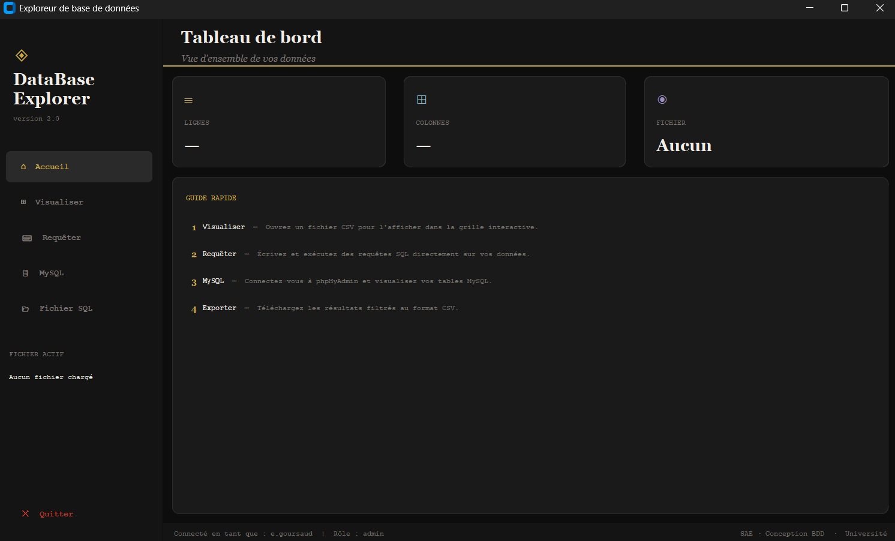

Pour cette SAÉ, l'objectif était de créer un programme capable de trier et d'ajouter des données, tout en utilisant une base de données. Ces dernières provenaient de plusieurs fichiers csv qui devaient être rassemblés.
Les différents fichiers recensent des livraisons, avec un identifiant du livreur, du fournisseur, le moyen de transport, ou encore le nombre de kilomètres parcourus.
Pour ce travail, avec Emerys GENIBEL et Hugo PONS, nous devions d'abord créer une base de données avec PHPmyAdmin, puis créer un code Python afin d'automatiser le tri, l'implantation et l'ajout de données (notamment avec le langage SQL), ainsi que la visualisation via une interface customtkinter.